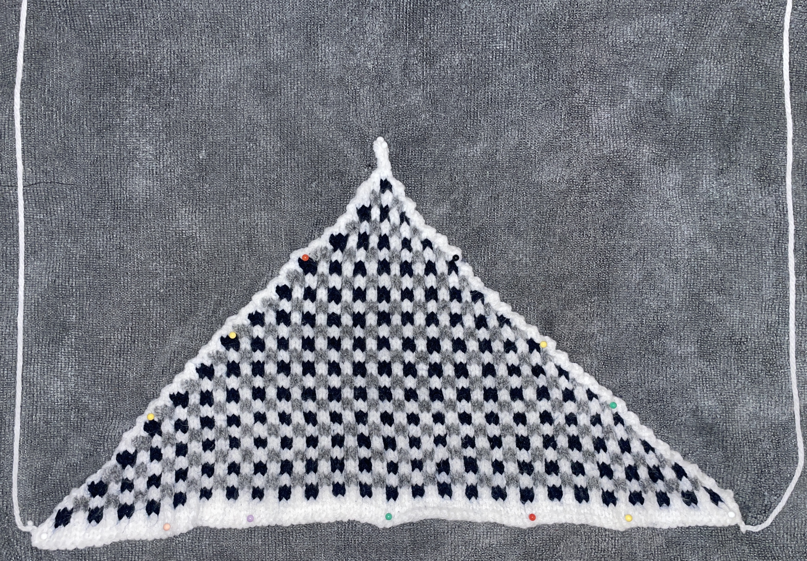

As I’ve been working through my current wip, I decided to take a quick break and do a small project. Since the start of my knitting journey back in 2020, projects with alternating colors have always intimidated me. I wasn’t sure how people managed the two or three or more yarn colors.
However, I needed something to challenge myself as I was getting bored of my wip, so I found this quick bandana pattern on Ravelry: https://www.ravelry.com/patterns/library/picnic-bandana
Here is the finised bandana:

This pattern was written so well for beginners as it was straightforward about when to alternate colors, and didn’t have any crazy steps involved. While I opted out of doing the button band, I’m pretty proud of this project especially for it being my first time doing colorwork. I used navy blue and gray yarn as my two contrasting colors and it turned out pretty cool. Let me know your thoughts before and see you in the next post!